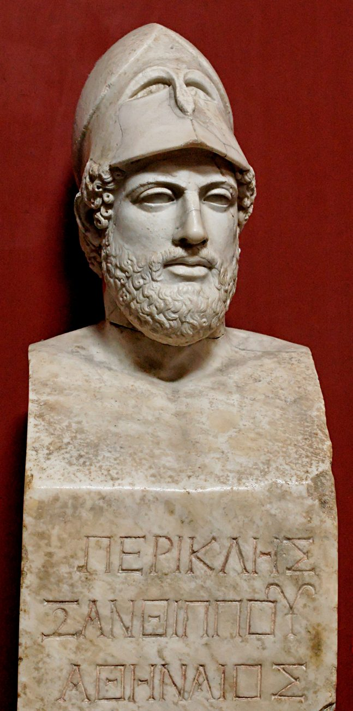

Unit 7 · Women in ancient Greece · Lesson 10
Aspasia of Miletus I: what can the sources tell us?
One woman, four sources in three genres, written from about the time she was alive to more than five centuries later. What does each one tell us, how close was each writer to her, and how do you quote them well?
Year 11 Ancient History · Present with → or space · Read on a phone with R

Images: Jastrow (Public domain). Full details on the last slide.
Connect · 3 minutes · books closed · everyone writes one line · press K for the timer
Women and the Assembly
Propose one reason women were excluded from the Athenian Assembly.
Cold call two students: what is your reason, and what would support it?
Citizen men fought for Athens and voted in its Assembly. A limit: resident aliens (metics) helped guard Athens in 431 BCE, yet, on the usual view, could not vote.
In Xenophon, Ischomachus says the god suited woman’s nature to indoor tasks and man’s to the outdoor ones, including campaigns. A limit: it is one husband’s view, as Socrates reports it.
Aristotle argued that the female has the deliberative part “without full authority”: an argument from ‘nature’ that probably defends a practice that already existed. A limit: it is one philosopher’s view, probably written after the practice.
Today’s woman could not vote either: Aspasia came from Miletus, so she was a metic. Yet writers kept talking about her. What do their sources really tell us?
Learning intentions and success criteria · 2 minutes
Today’s goals
- analyse the ancient sources for Aspasia
- judge how reliable each is, integrating short quotations
- outline what is known about Aspasia’s life and what is doubtful
- explain how each source’s genre and date shape its picture of her
- integrate a short quotation with a provenance phrase and a reference
Syllabus outcomes: AH-11-03 explains the role and significance of forces, features, events, individuals and groups in shaping the past · AH-11-05 analyses different types of sources for evidence to support a historical account or argument · AH-11-07 communicates historical understanding, applying historical knowledge, terms and concepts. Life Skills: AH-LS-06 investigates people, events or developments of the ancient world · AH-LS-11 communicates information about the past using historical terms and concepts.
Note-making · the routine for the whole course
How to structure your notes
questions and key terms, written after
short phrases, arrows (→ leads to), abbreviations (c. = about; BCE = Before the Common Era)
- 1A new page for each lessonA cue column about a quarter of the page wide; title and date at the top; room for a summary at the bottom.
- 2Listen and look, then writeDon’t copy while a slide is being explained. Phrases, not sentences; a source for every claim.
- 3Write your own notes at each ✎ checkpointThen compare with the model notes, one row at a time. Add what you missed in a second colour.
- 4Write the cue questions afterwardsUse exam verbs: identify, describe, explain. To revise, cover your notes and answer the cues.
- 5Finish with a three-sentence summaryTwo checkpoints today: the ladder, Plutarch and her life · Plato, Aristophanes and Xenophon.
Key vocabulary · add to the unit word wall
Words for reading sources about Aspasia
| Writing terms | Meaning |
|---|---|
| Provenance phrase | An appositive that says who made a source and when: ‘Thucydides, an Athenian general who lived through the war of 431–404 BCE, …’ |
| Added today | Meaning |
| Appositive | A noun phrase between commas that renames the noun before it: ‘Plato, an Athenian philosopher, …’ |
| Integrated quotation | A short quotation woven into your own sentence, with a signal phrase naming who says it and a reference, then what it suggests. |
| Source ladder | Sources lined up by date, genre and distance from the person’s life. |
| Content terms | Meaning |
|---|---|
| Metic | A free foreigner living in Athens, without citizen rights (e.g. Aspasia of Miletus). |
| Hetaira | A companion or courtesan, usually not a citizen. |
| Tragedy / comedy | Plays performed at Athenian festivals: serious stories of myth (Medea) / comic fantasies about the present (Lysistrata). |
| Added today | Meaning |
| Dialogue | A written conversation, often with Socrates in it. The speakers are characters, so a speaker’s words are not always the writer’s own view. |
1 · The source ladder · I do — build the ladder by date, genre and distance from her life
Four sources, three genres, one woman
| Source | Genre | Written | Distance from her life |
|---|---|---|---|
| Aristophanes, Acharnians | Comedy: a play for a festival | 425 BCE | Written while she was probably alive: four years after Pericles died (429 BCE) |
| Plato, Menexenus | Philosophical dialogue | After 387/6 BCE | More than forty years after Pericles died |
| Xenophon, Oeconomicus and Memorabilia | Socratic dialogues | Oeconomicus probably after 362 BCE; Memorabilia 4th century BCE | Decades after Pericles died: more than sixty years, in the case of the Oeconomicus |
| Plutarch, Life of Pericles | Biography, in Greek | About 100–120 CE | More than five centuries after Pericles died |
Cold call: why might a source that is close to her life still be a poor guide to it?
A comedy is written to make an audience laugh, and a dialogue to carry an argument, so being close in time does not make a source a record. A source written centuries later may use earlier writing, but it cannot be checked against her own life either.
1 · The source ladder · I do — think aloud on Plutarch’s hedges
What does Plutarch say, and how does he say it?
… since it is thought that he proceeded thus against the Samians to gratify Aspasia, this may be a fitting place to raise the query what great art or power this woman had, that she managed as she pleased the foremost men of the state … That she was a Milesian by birth, daughter of one Axiochus, is generally agreed; …
… Aspasia, as some say, was held in high favour by Pericles because of her rare political wisdom. … And it appears also that he begat from her that bastard son …
Plutarch, a Greek biographer writing about 100–120 CE · trans. B. Perrin (Loeb, 1916; public domain), LacusCurtius
Find the words that show Plutarch is reporting or hedging, not claiming to know. Pairs: three in one minute.
- 1The hedges“it is thought” · “is generally agreed” · “as some say” · “it appears”: each hedges a claim without saying whose it is.
- 2What a hedge tells usThat Plutarch is reporting or inferring, not claiming to know. It does not tell us whether the claim is true or false.
- 3What to ask nextWho is “some”? What did they write, and when? A hedge is a pointer to Plutarch’s sources.
1 · The source ladder · I do — outline what is known and what is doubtful
Her life: firm, hedged or doubted?

| Claim about Aspasia | Who says so, and how | How firm? |
|---|---|---|
| She came from Miletus; her father was Axiochus. | Plutarch 24.2: it “is generally agreed”. | Firmer: Plutarch calls it agreed. |
| She was Pericles’s partner and bore him a son. | Plutarch 24.5: he “took Aspasia”; 24.6: “it appears” that he had a son by her. | The partnership is told plainly; the son is hedged: “it appears”. |
| Her son, Pericles the younger, was later enrolled as an Athenian. | Plutarch 37.5: the Athenians “suffered him to enroll his illegitimate son in the phratry-lists”. Plutarch does not name the mother there. | The enrolment is told plainly; that the son was hers rests on 24.6’s “it appears”. It fits the law of 451/0 BCE being set aside for him (Lesson 6). |
| She was put on trial for impiety. | Plutarch 32.1 says so. Robert Wallace, a historian, writes: “I myself am also a doubter.” | Doubted: it may never have happened. |
Notes checkpoint 1 of 2
The ladder, Plutarch’s hedges and her life
2 · Plato, Aristophanes and Xenophon · We do — supported reading: joke, compliment or evidence?
Socrates says Aspasia taught him
… for she who is my instructor is by no means weak in the art of rhetoric; on the contrary, she has turned out many fine orators, and amongst them one who surpassed all other Greeks, Pericles, the son of Xanthippus.
… I was listening only yesterday to Aspasia going through a funeral speech for these very people. … she rehearsed to me the speech in the form it should take, extemporizing in part, while other parts of it she had previously prepared, as I imagine, at the time when she was composing the funeral oration which Pericles delivered; and from this she patched together sundry fragments.
Plato, an Athenian philosopher, a dialogue written after 387/6 BCE · trans. W. R. M. Lamb (Loeb, 1925), Perseus
Words: rhetoric the art of public speaking · rehearsed practised aloud · extemporizing making it up on the spot · patched together sundry fragments joined odd pieces
Pairs, then cold call: who is speaking, and what does Socrates claim? Joke, compliment or evidence?
- 1Who is speaking?Socrates, a character in a dialogue written by Plato more than forty years after Pericles died. We cannot tell what, if anything, Aspasia really said.
- 2What does he claim?That she taught him rhetoric, trained many orators including Pericles, and composed a funeral speech that she rehearsed to him. “As I imagine” marks a guess about when she prepared parts of it.
- 3Joke, compliment or evidence?Possibly a joke and a compliment: a man saying a woman taught him. As evidence of what she did, it is weak: it shows what Plato could imagine about her.
2 · Plato, Aristophanes and Xenophon · We do — comedy, probably in her lifetime
A comic poet blames the war on her household
… some young drunkards go to Megara and carry off the courtesan Simaetha; the Megarians, hurt to the quick, run off in turn with two harlots of the house of Aspasia; and so for three gay women Greece is set ablaze.
Aristophanes, an Athenian playwright, a comedy first performed at the Lenaea festival in 425 BCE · translator not named, in The Eleven Comedies (Liveright, 192?), Perseus. Dicaeopolis is a character in the play.
Words: Megarians people of Megara, a city near Athens · harlots, courtesan, gay the translator’s words for women paid for company · ablaze at war
Who is speaking, what is the joke, and what can a joke like this tell us?
- 1Who is speaking?Dicaeopolis, a character in a comedy, not Aristophanes in his own voice.
- 2What is the joke?A huge war said to start over stolen women, with her household named as one cause: an absurd story told to make an audience laugh.
- 3What can it tell us?That her name was probably well enough known in 425 BCE for the audience to catch the joke. It cannot show what her household was, or that she had any part in the war: drama is not a record (Lesson 4).
2 · Plato, Aristophanes and Xenophon · We do — two more philosophers’ pages
Xenophon’s Socrates quotes her
There’s nothing like investigation. I will introduce Aspasia to you, and she will explain the whole matter to you with more knowledge than I possess.
… I can quote Aspasia against you. She once told me that good matchmakers are successful in making marriages only when the good reports they carry to and fro are true; …
Xenophon, an Athenian and friend of Socrates · Socratic dialogues of the 4th century BCE (Oeconomicus probably after 362 BCE) · trans. E. C. Marchant (Loeb, 1923), Perseus
Pairs: what is Socrates using Aspasia for in each?
- 1What is she used for?As someone with knowledge about marriage: in the first, how wives are trained; in the second, how matchmakers should behave.
- 2Who says it?Socrates, a character in Xenophon’s dialogues, decades after Pericles died. Xenophon shows him naming her; he does not show her speaking.
- 3What does it suggest?That Xenophon could picture her as a wise woman worth quoting, as Plato did. Whether she ever said these things we cannot tell.
Notes checkpoint 2 of 2
Three pictures of Aspasia
3 · You do · Writing focus · 6 minutes · I do → We do → apply
Writing focus: weave in a short quotation, and say who and when
An integrated quotation opens with a provenance appositive (who, and when), weaves a short quotation into your sentence, gives the reference, then says what it suggests.
Explain what Plato’s Menexenus 236b suggests about Aspasia’s role. Worked example · written for this lesson
Plato, an Athenian philosopher writing more than forty years after Pericles’s death, has Socrates say that Aspasia had prepared parts of a funeral speech, “as I imagine, at the time when she was composing the funeral oration which Pericles delivered” (Menexenus 236b), which suggests a guess by a character in a dialogue, not a record of what she did.
Provenance appositive: who, what, when
A signal verb that says who speaks
A short quotation, woven in, in lower case
The reference
What it suggests, hedged
Open your answer with a provenance appositive, then weave in a short quotation with its reference: ‘[Writer], a… writing…, [verb] “…” (ref.), which suggests…’ Your Writing toolkit (booklet pages 3–4): attribution verbs.
Dropped in: ‘Aristophanes wrote Acharnians. “two harlots of the house of Aspasia”.’ Which rewrite is best? Vote on “3, 2, 1, show”.
- AThe Megarians ran off “with two harlots of the house of Aspasia” (Acharnians 524–529), which suggests a joke, not a record, because it is a comedy.
- BAristophanes, a comic poet of 425 BCE, has a character say the Megarians ran off “with two harlots of the house of Aspasia” (Acharnians 524–529), which suggests a joke, not a record.
- CAristophanes, a comic poet of 425 BCE, has a character say the Megarians ran off “with two harlots of the house of Aspasia” (Acharnians 524–529), which proves her household caused the war.
- DAristophanes, a comic poet of 425 BCE, has a character say: “the Megarians, hurt to the quick, run off in turn with two harlots of the house of Aspasia” (Acharnians 524–529).
A: no provenance. C: “proves” overclaims. D: no interpretation.
3 · You do · 21 minutes in all · deconstruct and check first (3 minutes) · press K, then click 20, when you start writing
A 5-mark reliability answer: deconstruct it first
How reliable is Plutarch’s Life of Pericles as evidence of Aspasia’s influence? 5 marks
Cold call: what does this question ask you to do?
| Step | Your question |
|---|---|
| Verb | How reliable: NESA calls ‘how’ a self-explanatory term. Its nearest key word is evaluate (department advice): ‘Make a judgement based on criteria. Determine the value of.’ So judge the source for this question: reliable for …, but not for …, because … |
| Topic | Plutarch’s Life of Pericles as evidence of Aspasia’s influence: what she did to shape events, not her life in general |
| Limits | Plutarch’s Life of Pericles; the other sources only to compare; influence; 5 marks |
| Do | 5 marks: a developed paragraph with a judgement (department advice). Open with a provenance appositive; integrate two short quotations, each with a reference and what it suggests; then judge its reliability for this question, as in the OVPRL routine on page 2 of your booklet, with a hedge that matches the evidence |
3 · You do · the source for your answer · read it for who, when and why
What does Plutarch say about Aspasia’s influence?
… what great art or power this woman had, that she managed as she pleased the foremost men of the state, and afforded the philosophers occasion to discuss her in exalted terms and at great length.
… Aspasia, as some say, was held in high favour by Pericles because of her rare political wisdom. Socrates sometimes came to see her with his disciples, and his intimate friends brought their wives to her to hear her discourse …
… in the “Menexenus” of Plato, even though the first part of it be written in a sportive vein, there is, at any rate, thus much of fact, that the woman had the reputation of associating with many Athenians as a teacher of rhetoric.
About this time also Aspasia was put on trial for impiety, Hermippus the comic poet being her prosecutor … Well, then, Aspasia he begged off, by shedding copious tears at the trial, as Aeschines says, and by entreating the jurors …
Plutarch, a Greek biographer writing about 100–120 CE · trans. B. Perrin (Loeb, 1916; public domain), LacusCurtius. Aeschines the Socratic wrote a dialogue called Aspasia, which does not survive (Perrin’s note). Use two of these extracts in your answer.
3 · You do · timer running (K, then 20) · 15 minutes of writing, then 3 minutes to check
Write your 5-mark answer
How reliable is Plutarch’s Life of Pericles as evidence of Aspasia’s influence? (5 marks)
- Open with a provenance appositive: who, what and when.
- Integrate two short quotations from Plutarch, each with a signal verb, its reference and what it suggests.
- Judge: reliable for …, but not for …, because …
- Choose a hedge that matches your evidence.
Explain why Xenophon’s Socrates naming Aspasia in the Oeconomicus and the Memorabilia might not show that she was influential in Athens.
Use your Notes 1 and the ladder dates. Verb bank:
Frame for your first sentence only: ‘[Writer], a… writing…, [verb] “…” (ref.), which suggests…’
Finish your notes If time · or at home
Summary: three sentences
- Put the four sources in order of distance from her life, and say how genre shapes one of them.
- Name one claim about her life that is firmer and one that is doubted, and who says so.
- What are the moves of an integrated quotation?
The ladder runs from Aristophanes’s comedy of 425 BCE, probably in her lifetime, through the dialogues of Plato and Xenophon, written decades after Pericles died, to Plutarch’s biography of about 100–120 CE, and each genre shapes its picture of her: a comic poet exaggerates for laughs, and a dialogue gives its words to a character. Plutarch calls it “generally agreed” that she came from Miletus, but her trial for impiety may never have happened, since Robert Wallace writes that he is “also a doubter”. An integrated quotation opens with a provenance appositive, weaves a short quotation into the sentence with its reference, and says what it suggests.
Check for understanding · hinge question · show your A, B, C or D card on “3, 2, 1, show”
Which source was probably written in Aspasia’s lifetime?
- APlutarch’s Pericles
- BPlato’s Menexenus
- CAristophanes’s Acharnians
- DXenophon’s Memorabilia
It was performed four years after Pericles died, so Aspasia was probably alive (her dates are not recorded). A was written about 100–120 CE, more than five centuries later. B (after 387/6 BCE) and D (4th century BCE) were written decades after Pericles died: she may have died by then, but no source says when.
Exit ticket · 4 minutes · before you leave
One integrated quotation about Aspasia
Write one sentence about Aspasia that integrates a short quotation from any source in today’s lesson: a provenance phrase, a short quotation, a reference and what it suggests.
A provenance phrase (who made it, and when) · a short quotation woven into the sentence, with its reference · what it suggests, with a hedge that fits the evidence · the right speaker for each claim.
Then check yourself against today’s three “I can” statements. Next lesson: Aspasia’s role and significance, and how historians disagree about her.
Practice and review · 1 of 4 · true, false, justify
True or false? Justify your answer
- 1Plutarch wrote the Life of Pericles within a few years of Pericles’s death. False — he wrote about 100–120 CE, more than five centuries after Pericles died in 429 BCE.
- 2In Menexenus 236b, Socrates is sure when Aspasia prepared parts of the speech. False — “as I imagine” marks his guess about when she prepared them.
- 3The words about “two harlots of the house of Aspasia” are spoken by Aristophanes himself. False — they are spoken by Dicaeopolis, a character in the comedy.
- 4Plutarch says it is “generally agreed” that Aspasia came from Miletus. True — “That she was a Milesian by birth, daughter of one Axiochus, is generally agreed” (Pericles 24.2).
- 5A historian, Robert Wallace, writes that he doubts her trial for impiety took place. True — he writes that the trial’s historicity “has been challenged by a number of scholars” and adds, “I myself am also a doubter” (BMCR 1996.04.07).
- 6A joke in a comedy about a person is a record of what that person did. False — a comic poet exaggerates for laughs; the joke shows a name was known, not what she did.
- 7The Vatican bust labelled Aspasia is a portrait made in her lifetime. False — it is a Roman copy, the identification rests on an inscription and is uncertain, and no one knows what she looked like.
Practice and review · 2 of 4 · writing · deconstruct each question first · read the marks
Fix a dropped quotation, then explain
- Plato wrote Menexenus. “is by no means weak in the art of rhetoric”.
- Aristophanes wrote Acharnians. “for three gay women Greece is set ablaze”.
- Wallace wrote a review. “I myself am also a doubter”.
1 · Plato, an Athenian philosopher, has Socrates say that the woman who taught him “is by no means weak in the art of rhetoric” (Menexenus 235e), which suggests a compliment paid to her in a dialogue, not a record of her teaching. 2 · Aristophanes, a comic poet writing in 425 BCE, has Dicaeopolis claim that “for three gay women Greece is set ablaze” (Acharnians 524–529), which suggests an exaggeration for laughs, not an explanation of the war. 3 · Robert Wallace, a classicist at Northwestern University, writes of Aspasia’s trial, “I myself am also a doubter” (BMCR 1996.04.07), which suggests that the trial is doubted by at least one specialist.
Explain why the bust labelled Aspasia is weak evidence of what she looked like.
The bust is weak evidence of what she looked like for three reasons. It is a Roman copy, made in the 2nd century CE, long after her lifetime, and the date and subject of the original it copies are not known, so it may go back to no one who ever saw her. It is identified as Aspasia only by an inscription, and that identification is uncertain. And none of today’s sources describes her appearance, so the face cannot be checked against anything. At most it suggests that later Romans knew her name.
Practice and review · 3 of 4 · extension · explain
Does Xenophon’s Socrates show she was influential?
Explain why Xenophon’s Socrates naming Aspasia in the Oeconomicus and the Memorabilia might not show that she was influential in Athens.
Shape: claim → support → limit.
… I will introduce Aspasia to you, and she will explain the whole matter to you with more knowledge than I possess.
… I can quote Aspasia against you. She once told me that good matchmakers are successful in making marriages only when the good reports they carry to and fro are true; …
trans. E. C. Marchant (Loeb, 1923)
One possible explanation is that Xenophon, an Athenian writing Socratic dialogues decades after Pericles died, named Aspasia to make a point about marriage, so the choice of her name may say as much about what he wanted Socrates to argue as about her. In the Oeconomicus Socrates, a character, says she will explain marriage “with more knowledge than I possess” (Oeconomicus 3.14), and in the Memorabilia he quotes her advice on matchmakers, which suggests a reputation for wisdom about marriage, not that she shaped events in Athens. However, this is only a proposal: it cannot be tested without a source from her own lifetime that mentions her advice, and Plato makes a similar claim in the Menexenus, which may mean that the idea of a wise Aspasia was already circulating.
Practice and review · 4 of 4 · cover your notes and answer from memory
Quick checks
- Which of the four sources was written nearest her lifetime, and when? Aristophanes’s Acharnians, a comedy of 425 BCE, four years after Pericles died: she was probably alive.
- What is a provenance phrase? An appositive that says who made a source and when, for example ‘Plato, an Athenian philosopher writing more than forty years after Pericles’s death, …’
- What does “as I imagine” in Menexenus 236b show? That Socrates, a character in Plato’s dialogue, is guessing when Aspasia prepared parts of the speech.
- Who speaks the lines about “two harlots of the house of Aspasia”, and why does that matter? Dicaeopolis, a character in a comedy: they are a joke for an audience, not Aristophanes’s own statement, and not a record.
- What does a hedge such as “as some say” show about Plutarch? That he is reporting what others say. It does not show whether the claim is true.
- Name one claim about Aspasia’s life that is doubted, and who doubts it. That she was put on trial for impiety (Pericles 32.1): the historian Robert Wallace writes that he is a doubter.
Sources and credits
Where everything comes from
Plutarch, Pericles 24, 32 and 37 (and 30.4, in the teacher notes): trans. B. Perrin, Plutarch’s Lives, vol. III (Loeb Classical Library, 1916; public domain), LacusCurtius. Plato, Menexenus 235e–236b: trans. W. R. M. Lamb, Plato, vol. 9 (Loeb, 1925), Perseus Digital Library (CC BY-SA 3.0 US); short extracts quoted for study. Aristophanes, Acharnians 524–529: anonymous translation in The Eleven Comedies (New York: Liveright, 192?), as Perseus credits it, Perseus (CC BY-SA 3.0 US). Xenophon, Oeconomicus 3.14 (Perseus) and Memorabilia 2.6.36 (Perseus): trans. E. C. Marchant, Xenophon, vol. 4 (Loeb, 1923) (CC BY-SA 3.0 US); short extracts quoted for study. Thucydides 2.65.6, trans. T. Hobbes (1843), Perseus, for the date of Pericles’s death (teacher notes).
Historian: Robert Wallace (Classics, Northwestern University), review of Madeleine M. Henry, Prisoner of History (Oxford University Press, 1995), Bryn Mawr Classical Review 1996.04.07; brief quotations for study.
Outcomes and content: NSW Education Standards Authority (NESA), Ancient History 11–12 Syllabus (2024). © NESA. Directive verbs: NESA, Glossary of key words.
- Marble bust identified as Aspasia by an inscription, a Roman copy (Vatican Museums, Inv. 272) · Photo: Jastrow (2006) · Public domain · source
- Marble herm of Pericles, a Roman copy after a Greek original of about 430 BCE (Vatican Museums, Inv. 269) · Photo: Jastrow (2006) · Public domain · source


All images are public domain or openly licensed, and were resized or cropped for the web. Each is shared under the licence shown.